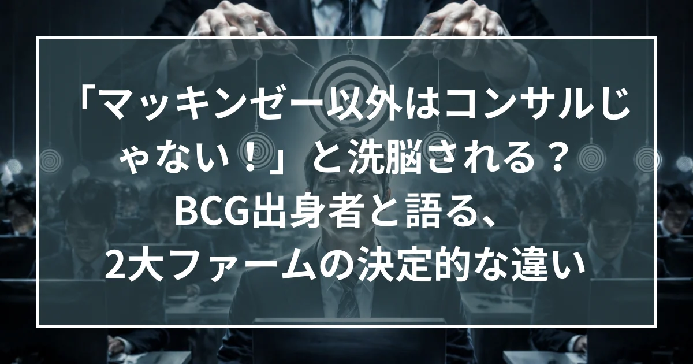

「マッキンゼー以外はコンサルじゃない」と洗脳される？ BCG出身者と語る、2大ファームの決定的な違い

■ はじめに
コンサル業界のトップに君臨する「MBB（マッキンゼー、BCG、ベイン）」。
外から見れば同じような「超エリート集団」に見えますが、中の人間に言わせれば、その文化や常識は全くの別物です。
「マッキンゼーでは、他社はコンサルではないと刷り込まれる？」
「給料はBCGの方が2割も高い？」
「英語ができないとマッキンゼーでは昇進できない？」
今回は、マッキンゼー出身の村木（ステラキャリアズ代表）と、BCG出身の春名氏によるスペシャル対談。両ファームの実情を知り尽くした2人が、噂の真相とリアルな違いを語り尽くします。
■ マッキンゼーにおける「他社の扱い」
Q：本日はマッキンゼー出身の村木さんと、BCG出身の春名さんにお話を伺っていきたいと思います。よろしくお願いします。
A（村木）：お願いします。まずマッキンゼー……「McK（マック）」ってみんな社内では言うんですけど、McKから言うとですね、ぶっ込んだ話をすると「BCGとか見えてない」ですね（笑）。
「The Firm（ザ・ファーム）」って言うんですけど、ファームってコンサルファームのことなんですけど、ザ・ファーム、もう「マッキンゼー以外のコンサルファームはコンサルではない」っていうのを、すごい刷り込まれるんですよ。だから、「え、BCG？ 何それ？」みたいな感じです（笑）。特に現場は……多分上のパートナーとかは日々営業とかでコンペとかでバチバチBCGとかベインとかとやってるんで、なんかそんなことはきっと思ってない人もたくさんいると思うんですけど。でもやっぱりちょっとこう「宗教チック」なところがあるんで。なんかもう「みんなザ・ファームで働いてるんだから、だからもう寝ずに頑張ろうよ」とか、「ザ・ファームで働いてるんだからこんなレベルじゃダメだよね」みたいな、なんかそういう感じで使ってるので。だから現場レベルのコンサルタントとかは、割と「BCG？ 何それ？」みたいな感じです。
Q：BCG側はどうなんですか？
A（春名）：多分、BCGの中で「自分たちがMcKより上だ」と思ってる人は1人もいないっす（笑）。
Q：2番手意識は強いんですね。どれぐらいの差を自覚されてるんですか？
A（春名）：McK、BCG、ベインで、ここは薄い壁がある感じですね。
Q：あ、なるほど。ベインはどうですか？
A（春名）：ベインは多分、同格だと思ってます。
Q：あ、ベインは同格だと思ってるんですね。
A（春名）：で、あとATカーニーとかには、まくられるんじゃないかって思ってる気がします。
Q：あ、MBB、A（アクセンチュア等）みたいな。
A（村木）：いますね。なんかGMARCHみたいな感じで、なんかカーニーが入ってきてますけど（笑）。
A（春名）：でもじゃあカーニーはなんかどういう……なんかカーニーからBCGに来る人とかいるんですけど、軒並みクオリティが高いって言われてて。下手したらBCGの生え抜きより高いんじゃないかってパートナーが結構言ってたりして。なるほど、なんでカーニー結構すごいなっていう風に思ってます。
ただ、BCGの方が勝ってるっていうところあると思ってて……。
■ 給料はBCGの方が高い？
Q：どこが勝ってるんですか？
A（春名）：「給与テーブル」は、全体的にBCGの方が高いって噂を聞いたんですよ。
A（村木）：うん。それ噂じゃないですね。大体BCGの方が、同じポジションだったら2割ぐらいは（高い）。
A（春名）：そんな違うんすね。
A（村木）：違いますね。
A（春名）：なんか「給料もらってるな」っていう意識はありました。コンサルファームの中でトップクラスでもらいすぎぐらい。
A（村木）：そうですよね。でもなんかこれMcKの多分従業員目線でいくと良くないところで、「ザ・ファームなんだからお給料ぐらい我慢しなよ」みたいなのは、なんか雰囲気として感じてましたね。
Q：あ、それは低いってことですか？
A（村木）：あ、そう、そう、そう。BCGに比べて低いってのは割とみんなの共通見解としてあって。で、なんかこう「上がんないんですかね？」みたいな、飲み会の場とかでこう叩いたりとかすると、「いやいや、ザ・ファームなんだからさ」みたいなのはなんかあった気がします。
A（春名）：BCG内で「McKより給料高い」って思ってる人はあんまいないかなと。
A（村木）：あ、そうですか（笑）。
■ ウェットなマッキンゼー、ドライなBCG
Q：社風とかはどんな感じなんですか？
A（春名）：2社経験者のN数少ないんですけど、僕の個人的感覚、意外と「BCGの方がドライ」で、「McKの方がウェット」。
A（村木）：うん。
A（春名）：世の中的なイメージと逆な気がするんですけど、BCGはクールなエリート系が多い。McKは意外と面倒見がいい、人が暖かい感じかなと思います。
Q：なんかどういうところでそれ思いました？
A（春名）：レビューの感じとか、BCGのマネージャーの方がドライな感じしますよ。
A（村木）：あ、私レビューしたことありますもんね。春名さんの。
A（春名）：うん。そう。だから（村木さんとの比較で）N数が少ないんですよ、普通に。はいはいはい。ただそん中で行ったらMcKの方が暖かい感じ。
Q：なんかもうちょっと具体的に、村木さんはどういうインプットをして、BCGのマネージャーはどういうインプットをしてたかと言うと？
A（春名）：なんかそのインプットの内容というか、話し方とか表情の感じとか、そもそも人間のカラーとしてBCGの方がクールな人が多い感じがします。クールにインプットだけしてくのがBCG。多分なんかMcKの方が世間的に「天才型」「破天荒型」って思われてる気がするんですけど、僕の個人的な感覚、BCGの方が「天才型」が多い。なんかその、あんま人の気持ちに寄り添うとか……が、えっと、そこまで重視されてない感じがする。
A（村木）：そうかもしれないですね。確かにMcKは、ウェット、そうですよね。ウェットだし「人の成長をすごい大事にしよう」ってのは思ってる会社なんですよね。会社のミッションとして「グローバルリーダーをこう輩出していく」っていうのが、マッキンゼーってすごい大事っていう風にされていて。なんかそれこそあの茂木大臣だったりとか、アメリカだとライス国務長官とか。あと、そういう政治家だったり、財界とかでもいっぱい有名な人って世界各国にいらっしゃるんですけど。やっぱそういう人たちを輩出していきたい。それにはこうしっかりとコーチングしてあげて、フィードバックもいっぱいしてあげて、「みんな成長しなきゃいけないんだ」っていう。なんかそこが会社のカルチャーとしてすごく強かったですね。
そういうのはないんですか？ BCG。
A（春名）：BCGは……BCGの理念が染みついてない。全然思い出せないですね（笑）。
A（村木）：思い出してください（笑）。
A（春名）：思い出せないな。まあ、少なくともN=1の僕が認識してないっていうことは、あんま刷り込みが強くないんじゃないかなって気がします。僕の1社目がコンサル会社でもなかったんですけど、上司でBCG出身とベイン出身の人がいて。で、ベイン出身の人は、ベイン時代に「True North（トゥルー・ノース）」っていうのをすごい言われてて。要はなんか「クライアントが間違った方向に進んでたら、軋轢が生まれてもそこを正しに行かないといけない」っていうことを言われたんですよ、ベイン出身の人に。で、BCG出身の上司はあんまりそういうことは言ってなかった気がする。な、ファーム入ってから、BCG入ってからもそんなに刷り込まれた記憶はないかな。「ブルース・ヘンダースン（創業者）の思想がどこ」みたいな、入社初日の研修でちょっと言われた記憶があるくらいで。
■ スライドのマッキンゼー、テキストのBCG
Q：仕事の進め方とかで言うとどうですか？
A（春名）：これも僕の経験でN数限られているんですけど、「BCGってギリギリまでスライド化しない」っていうのがあったんですよ。で、「McKは結構とりあえずスライド化して議論する」って感じがしました。
A（村木）：確かに。
A（春名）：BCGはテキストでストーリーとかメッセージひたすら作り込んで、パートナー含めて散々議論して。クライアントミーティングの前日夜とかまでずっとテキストなんです。そこから一晩でスライド化して翌日のクライアントミーティング臨む、みたいな。なんでスライドのビジュアルに対する重視度が、McKと比べると低い感じがします。
A（村木）：あ、真逆ですね。McKはスライドになってないとパートナーって見てくれないんですよね。
だから最初はもちろんこう手書きとかで、こう手書きでスライドをこんな感じで書くとか、そっから大体作業ってスタートするんですけど。もちろんそんなものなんて見せられないし。で、ただこれは多分理由があって。パートナークラスになると、大体「1スライド2秒」とか見たら、もうそれがいいスライドか悪いスライドかってこう判断できるんですよね。でもそれでパートナーの中のなんかその「ビジュアルのパターン認識」の中で、いいパターンでこうはまってるスライドだったら、これクライアントに持ってこうってなるし。そうじゃなかったらこれ直そうってなるし。で、なんかそれはテキストベースではこう判断できない。「スライドになってないとそれは判断できない」みたいな感じでした。
Q：なんか納得感があります。うん。確かに。
A（村木）：どっちもね、やり方が違うだけで、どっちも極めていけばいいですよね。
■ 英語力の格差（BCGマネージャー ＝ マッキンゼー入社0日目）
Q：その他にはなんかここが違うんじゃないかみたいなのはありますか？
A（村木）：多分もう1つあるのが、あの「英語を使う頻度とか重要性」みたいなところかなと思っていて。ファーム（マッキンゼー）は、例えばクライアントが全員日本人みたいな、もう日系企業相手の日本のプロジェクトとかであっても、チームメンバー……パートナーから一番下のアナリストまで、5人いたら多分2人か3人は外国人なんですよね。日本人だけで構成されてるプロジェクトって多分ほぼなくってですね。なんかそれってさっき言った「グローバルリーダーを輩出する」みたいなところにも、やっぱりこう強く関わってると思うんですけど、グローバルリーダーが育っていかないから。だから仮に日本のお客さん、日本のトピックだったとしても、「いや中国でこういうの詳しいエキスパートとかいるから1人チームに入ってもらおうよ」とか。あとそもそもオフィスの中にいっぱい他の国から来てる人とか大量にいるので。じゃあ「英語を話せないともうマジで何もできない」っていうのが、マッキンゼーですね。
A（春名）：全然違うかも。BCGで言うと、体感プロジェクトの「オール英語が4割」、「オール日本語4割」で、「残りの2割がミックス」。
例えば基本は日本語で進めるけど、結構インタビューで英語使う機会を見る、みたいなのが割とあって、なんかその「自分は英語できないから、その4割のオール日本語のプロジェクトにひたすら応募してって、そこだけで戦ってくんだ」みたいなコンサルタントは結構多かった。
A（村木）：うん。なるほど。英語できなくてもなんとかなるのがBCGか。英語できないとどんだけ優秀でもプロモーション（昇進）できないので、McKは。だからもう早期に辞めるしかないですね。
A（春名）：それで言うと、BCGも一応ベルリッツの英会話でスコアがこう要るようにならないと上がれない、みたいながありました。ただ僕それ引っかかって1年半で上がれなかったんですけど（笑）。
A（村木）：そういうことですね。
A（春名）：はい。でも確かなんか世間的にはそんなに厳しい基準ではないはず。
A（村木）：世間的にはって言っても選考基準ですけど、確かにそれで言うとちょっとよく聞く話は、マッキンゼーの入社するための、英語のテストがあるんですけど。その基準と、BCGのマネージャーとかに昇進するための英語の基準がほぼ一緒っていう。で、マッキンゼーでマネージャーに上がるためのこう要件ってこの辺なんで。だから、分かりやすく言うと「BCGのマネージャー」と「マッキンゼー入社0日の人」の英語力の、基準・要求水準がほぼ一緒ぐらいっていう。でもやっぱりこれは英語どれぐらい使うのか、英語が大事かっていう、それぞれの会社の実態に即しているのかなって思いますね。あとベインも結構、グローバルベインも多いですね。
A（春名）：でもベインは入社の時に英語何点以上ないと入社できないとか、そういう厳格なルールはないので、とりあえず入社はできますね。でも入社した後やっぱり英語ができないと苦労は皆さんされるみたいですね。うん。
Q：あとMcKってケース面接の英語が必須とかって？
A（村木）：そうですね。英語のケース面接やらないといけないですね。
A（春名）：僕は全部日本語でしたね。
A（村木）：基本日本語ですね。英語のケース面接が出されるのは今、マッキンゼーのみですね。
■ 役職とプロジェクトの違い
Q：あの昇進とかの階層とかの違いも結構あるんですか？
A（春名）：違いで言うとパッとわかんないんですけど、BCGの役職フラットに言うと、一番下がアソシエイト、そっからシニアアソシエイト、コンサルタント。でコンサルタントの中に公式で明確に役職分かれてるわけじゃないんですけど、役割として「リードC」って呼ばれるプロジェクトリーダーの見習いみたいなのがあって。
その次がプロジェクトリーダー、プリンシパル、パートナー、マネージングディレクター＆パートナーですね。
A（村木）：区切りましたね（笑）。リードCを入れないと7ですね。
A（春名）：あ、7もあるんですか？
A（村木）：McKは6なんでそんな変わんないですね。ビジネスアナリスト、アソシエイト、エンゲージメントマネージャー、アソシエイトパートナー、パートナー、シニアパートナー。もちろんこの中でちょっと2つとかに分れてるところとか厳密にはあるんですけど、大体一緒ぐらいじゃないですか？
A（春名）：あれですか、ジュニアのロール1個BCGの方が多いですかね？ マネージャーになるまでに3つありますね。アソシエイト、シニアアソシエイト、コンサルタント。
A（村木）：そうかもしれないですね。でもMcKも厳密に言うとなんかジュニアアソシエイトとか、あとタイトルではないんですけどジュニアエンゲージメントマネージャーとか、あとEMもシニアEMとかあったりとか。だからなんかどの粒度で分けるかで大体一緒ぐらいなんじゃないかっていう気がしますけどね。
Q：案件の違いとかはどうですか？
A（村木）：McKから行くと、なんか、他ファーム出身者の方とお話ししていて最近すごく思うのが、やっぱMcKって「CEOアジェンダをこうひたすら解く」っていうのがもうやってることなんですよね。だから案件もおのずと「CEOこんなことやって欲しいな」っていうことがやっぱり案件になっていて。で、CEOがこんなことやって欲しいって何かって言うと、新規事業開発とかDD（デューデリジェンス）とかではないんですよね。
例えば経営企画本部長とかの目線だったら「買収とかしなきゃいけないからDDやんなきゃ」とか「新規事業しなきゃ」とか、まあなんかそれで頭100%かもしれないですけど。社長ってもちろんそれも大事だし、売上向上もコストカットも、例えばその役員今後どういう風にあの役員自分の後進を育成していくのかとか、なんかもう考えることってこう多岐に渡るので。だからプロジェクトもおのずと、もう売上向上もするし、コストカットもするし、人事系のマターもあるし、SDGsもあるし。で、もちろんDDあって、で、会社売却しなきゃとか買収しなきゃってなったら、M&A PMOってこう走るしっていう。もう本当にCEOがその時大事なことに、マッキンゼーのコンサルタントが入っていくっていう。だから私も売上向上もコストカットもなんか全部一通りやったかなって。で、その中でも、こう時期にもよりますし、コンサルタントにもよりますけど、割とコストカットとかはなんかこう手堅く効果として出てくるので。「コストカットしっかりやってこう盤石にインパクト出して、で、そこからこう他のプロジェクトとか他のワークストリームにもこうなんか広がっていく」とかあったので。コストカット全然やってない戦略ファームとかもやっぱりあるんですよね。だからそういうところに比べるとMcKってめっちゃコストカット多い。で、そういう印象を持つ人は多いかなと。
でも繰り返しですけど、別にMcKがコストカットしたいわけじゃなく、CEOアジェンダを見てるので、それでたまたまコストカットがホットトピックだったらコストカットやってるっていう、そういうことかなと思います。
A（春名）：BCGに、えっと、マッキンゼー出身のパートナーがいたんですよ。同じこと言ってました。「McKの方がコストカット（多い）」。僕も2年ぐらいしかいなかったですけど、1回もコストカットやったことなかったですね。
A（村木）：あ、そうですか。
A（春名）：はい。見かけはしましたけど、あんまり数としては多くないかなって感じしました。
■ まとめ
今回の対談から見えてきたのは、「マッキンゼーとBCGは似て非なるもの」という事実です。
マッキンゼー（McK）は「ザ・ファーム」としての強いプライドと宗教的なカルチャーを持ち、ウェットに人を育て、英語を共通言語としてグローバルにCEOアジェンダを解決する集団。
BCGは少しドライでクールな職人肌が多く、徹底的にテキストで論理を詰め、国内案件であれば英語が苦手でも活躍の場がある、そして給与水準が高い実利的な集団。
どちらが優れているかではなく、「どちらのカルチャーが自分に合うか」が、ファーム選びの最大のポイントと言えそうです。
Go back to Insight